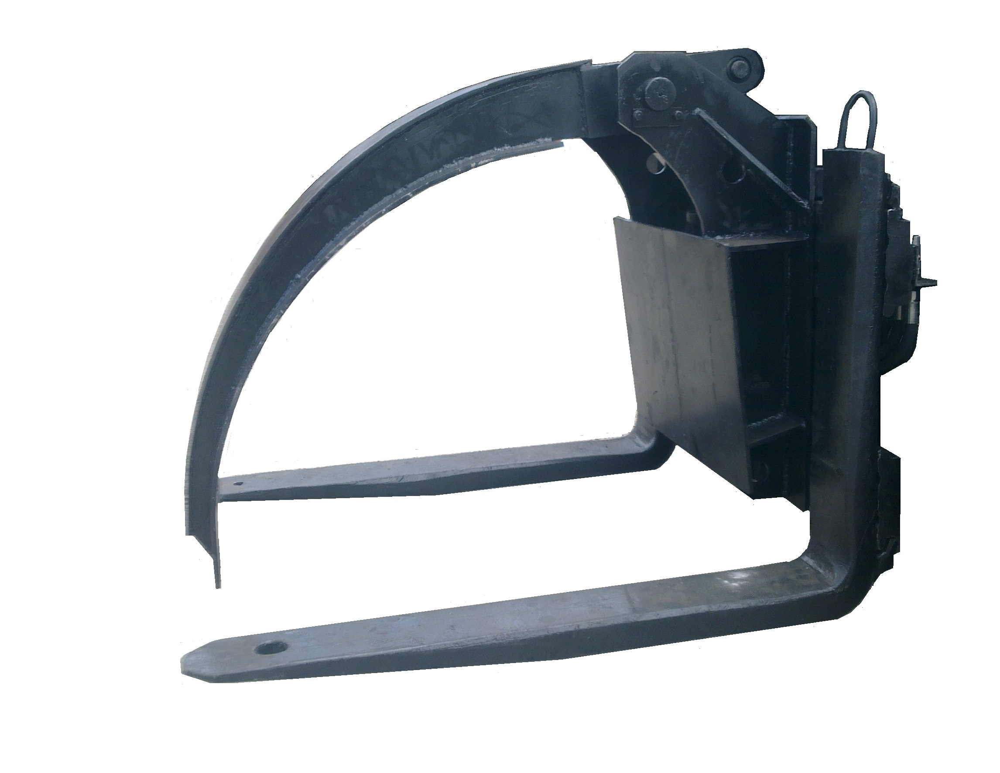

Вантажозахоплююче навісне приспосіблення
| Зоображення | Назва | Опис | Зоображення | Назва | Опис |
|---|---|---|---|---|---|
| Механічне навісне обладнання | |||||
|
Подовжувачі вил | Вантажопідйомність - 1,0 – 5,0 т Довжина 1,5- 3м | Багатовилковий підхват | Вантажопідйомність - 1,0 – 3,0 т Мах ширина-4м | |
|
Стріла безблокова | Мах виліт-2,1 м Вантажо-сть–1 - 4т Довжина – 2,2м | Стріла телескопічна | Мах виліт- 5м Вантажо-сть–1 - 5т Довжина – 2,8м | |
|
Кран-балка | Вантажопідйомність-сть– 1,0- 5т Монтаж на вили | Стріла кранова | Мах виліт- 3м Вантажо-сть–5т Довжина – 6,8м | |
|
Штир для рулонів та котушок | Вантажопідйомність - 1,0 – 3,0 т Довжина 1,5- 2,5м | Штир для рулонів металу | Вантажопідйомність - 3,0 – 10,0 т Довжина 1,2 -2м | |
| Відвал для снігу і землі | Ширина захвату – 1,5 – 3м Поворот п/л- 300 | Платформа для людей | Вантажопідйомність - 0,5 – 1,0 т Мах ширина-2,0м | ||
| Гідравлічне навісне обладнання | |||||
|
Каретка бокового зсуву | Вантажопідйомність - 1,0 – 3,0 т Мах ширина-1,1м Зсув пр/л-100-150мм | Каретка поперечного переміщення | Вантажопідйомність - 3,0 – 10,0 т Мах ширина-1,6м Зсув пр/л-150-400мм | |
| Позиціонер вил | Вантажопідйомність - 1,5 – 10,0 т Мах ширина-2,5м Розмах лап–2,5м | |
Зіштовхувач вантажів | Вантажопідйомність - 1,5 – 3,0 т Мах довжина-2,5м | |
|
Поворотна каретка | Вантажопідйомність - 1,0 – 3,0 т Кут повороту-1800 | Кантувач | Вантажопідйомність - 2,5 – 5,0 т Кут повороту-3600 | |
| Ковші | |||||
| Ковш для будівельних матеріалів | Об’єм – 0,5 -1,0м3 Ширина -1,4 -2,0м | Ковш для зерна | Об’єм – 1,2 -2,5м3 Ширина -1,5 -2,5м | ||
|
Ковш щелепний | Об’єм – 1,0 -1,5м3 Ширина -1,8 -2,4м | |
Щітка для підмітання | Ширина – 1,5-2,0м Поворот пр/л- 300 |
| Захвати | |||||
|
Захват боковий кіповий | Вантажопідйомність - 1,0 – 5,0 т Мах розмах -2,3м Min розмах –0,4м | Захват для блоків | Вантажопідйомність - 1,0 – 3,0 т Мах розмах -2,0м Min розмах –0,2м | |
| Захват для пінопласту | Вантажопідйомність - 1,0 – 3,0 т Мах розмах -2,5м Min розмах –0,5м | Захват для рулонів | Вантажопідйомність - 1,0 – 5,0 т Мах розмах -2,5м Min розмах –0,5м | ||
|  | Захват для лісу | Вантажопідйомність - 3,0 – 5,0 т Мах площа захвату -1,2м | Захват для труб | Вантажопідйомність - 3,5 – 5,0 т Мах площа захвату -1,0м | |
| Захват-колесознімач | Вантажопідйомність - 2,7 – 5,0 т Мах розмах -3,2м Min розмах –1,3м | Захват-роторознімач | Мах зусилля зриву ротора млина – 50тон | ||